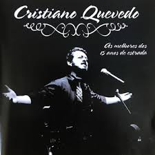

Esse meu jeito de alçar a perna
De mirar ao longe o horizonte largo
É o contraponto de beber auroras
Quando cevo a alma pra sorver o amargo
Esse silêncio que me traz distância
Que me agranda o canto entre campo e céu
É o contraponto de acender o fogo
Meço um metro e pouco da espora ao chapéu
Essa coragem de pelear de adaga
De ser um gigante pela liberdade
É o contraponto de ajuntar terneiros
E acenar aos velhos e ter humildade
Essa audácia de buscar o novo
Sem pisar no rastro ou reacender as brasa
É o contraponto de ter prenda e filhos
E ficar tordilho ao redor das casa.
